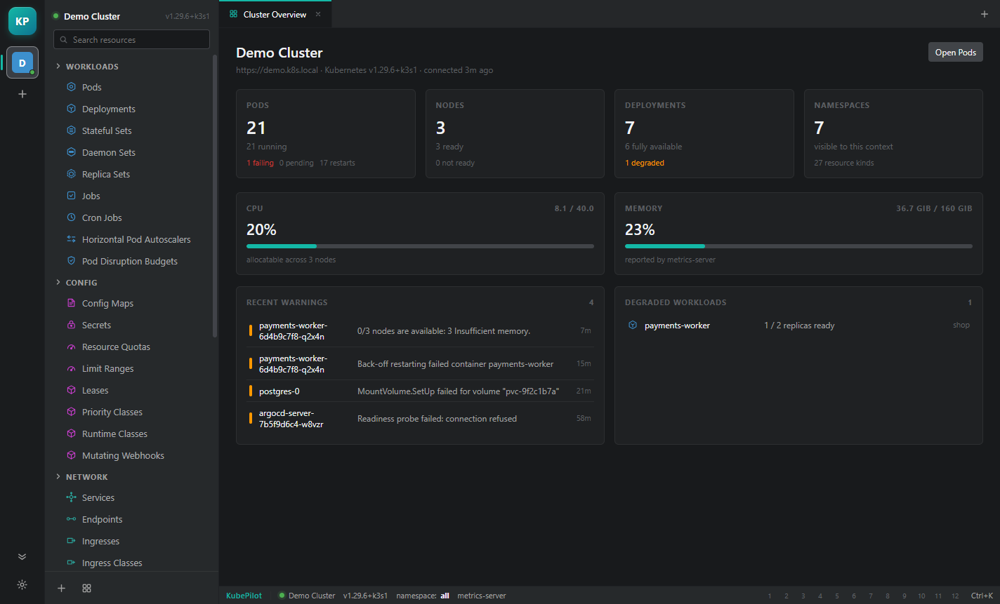
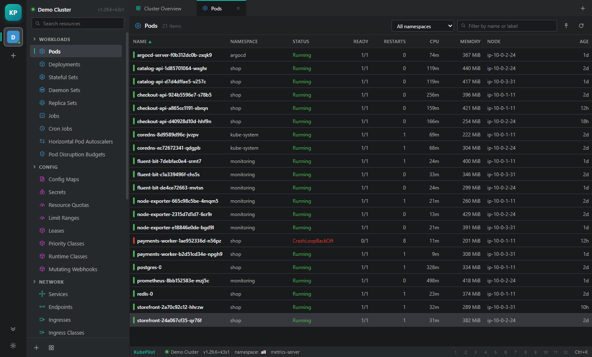
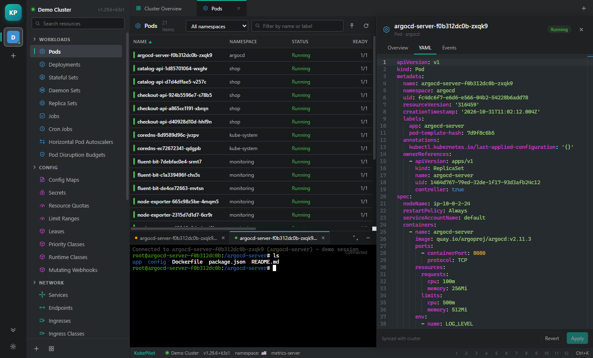
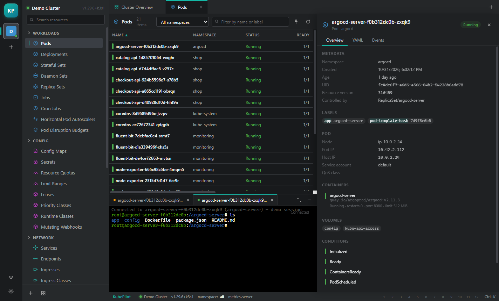

01 Live resource tables
Watch-backed lists for 35 kinds across workloads, config, network, storage and access control. Sort, filter, scope by namespace — rows update as the API server reports changes.
KubePilot is a desktop Kubernetes IDE. Browse workloads, read logs, open a shell and edit YAML across every cluster in your kubeconfig — in one window, with no account and no telemetry.
git clone https://github.com/kubepilot/kubepilot
cd kubepilot && npm i && npm run dev
Built around the loop you actually run: find the object, look at it, read what it is complaining about, change it.
Watch-backed lists for 35 kinds across workloads, config, network, storage and access control. Sort, filter, scope by namespace — rows update as the API server reports changes.
Containers, conditions, volumes, labels and the events behind a failure, in one
drawer. Status colours follow Kubernetes semantics, not just phase.
Monaco editor with server-side apply and field manager.
Follow, pause, wrap, switch containers.
A real shell over WebSocket, with resize.
Pod and node CPU/memory from metrics.k8s.io. When metrics-server is
missing, requests and limits still tell you where the ceiling is.
The four actions you run a hundred times a week, one keystroke away — including
managed port-forward children.
The navigator groups every kind the API server advertises, including custom resources. Click a row and the table keeps your place while the drawer explains what you are looking at.

The drawer's YAML tab is a live document. Apply sends a server-side apply with a stable field manager, so repeated applies converge instead of fighting.

The dock holds logs and terminals side by side. Terminals speak
v5.channel.k8s.io, so stdin, stdout, stderr and resize all work the way
kubectl exec does.

The palette indexes clusters, kinds and actions. Type three letters and you are there.
Three processes, one typed bridge, and a Kubernetes client written directly against
node:https — no client library, no bundled kubectl.
contextBridge surface. Context isolation on, node integration
off — the renderer never touches Node.
LiveBackend talks to an API server; DemoBackend serves a
deterministic cluster so the UI runs with no kubeconfig at all.
Grab the Windows installer from the releases page, or run it from source — Node 22 and a kubeconfig are all you need.
KubePilot-0.1.0-x64-setup.exe — per-user install, choose your own
directory, desktop and start-menu shortcuts.
npm install, then npm run dev. Ship a build with
npm run dist.